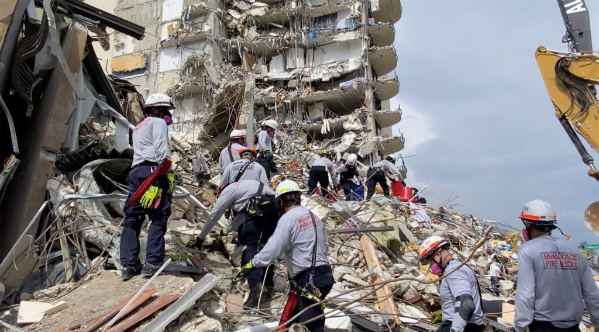
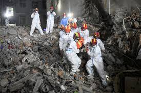
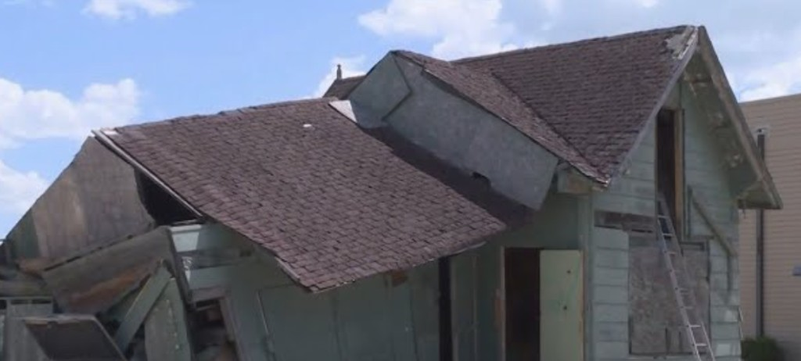

Manual control burden
Many systems still depend on continuous human piloting in high-stress environments.
A Brain‑Inspired Rescue Drone Navigation System
"When every second matters, responders need safer ways to see, decide, and save lives."
Responders need to see inside collapsed, unstable, and smoke-filled spaces before they can safely enter.
The real challenge is not just access: it is getting safe, reliable situational awareness in places people cannot yet enter. Manual drone piloting in cluttered disaster zones is mentally taxing and error-prone.



Today’s disaster-response drones still rely on fragmented 2D sensing and heavy human control.
Many systems still depend on continuous human piloting in high-stress environments.
Flat video feeds miss depth, hidden voids, and structural hazards.
Human operator overload
One person must monitor feeds, alerts, navigation, and manual control at once.
The human decides intent. AI handles the complexity.
A staged, simulation-first plan builds evidence before any real-world deployment.
Test 3D mapping, obstacle avoidance, and safe path planning in virtual disaster scenes.
Measure whether consumer EEG can reliably decode commands and detect veto signals.
Evaluate end-to-end safety, replanning, and operator workload in shared-autonomy missions.
Same core, more places it can help
How I used AI responsibly to research, refine, and communicate this project
I identified the real challenge in disaster response: responders need faster, safer situational awareness in dangerous indoor environments.
I used AI to accelerate background research, compare technical approaches, and organize complex ideas, while verifying what was relevant to my concept.
I made the final architectural decisions by breaking the solution into mapping, navigation, shared autonomy, and brain-guided input modules.
I used AI to improve clarity, iteration, and presentation, but I did not treat AI output as truth; I filtered, adapted, and judged every part of the final work myself.
It is to give them a safer way to see, decide, and save lives.